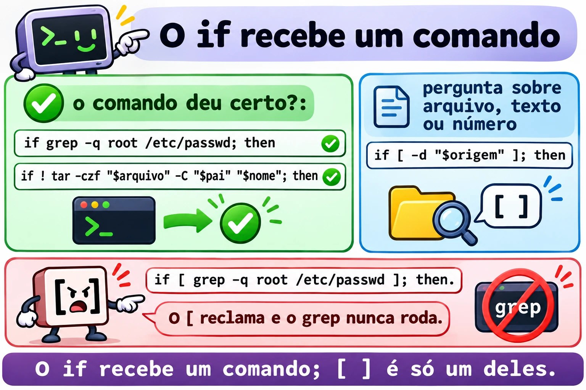
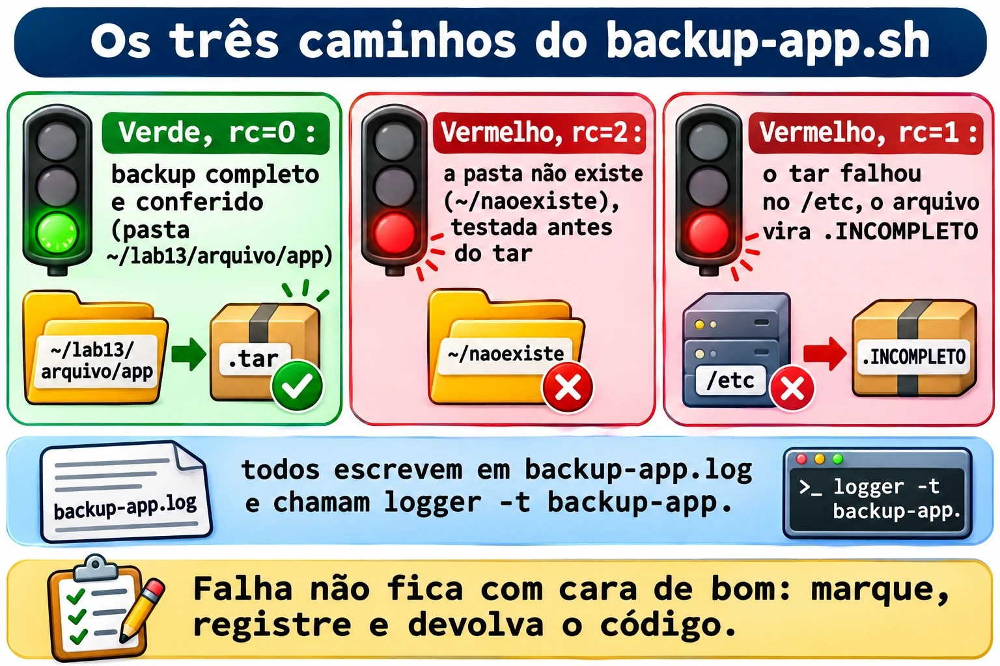

Aula 1.9 · Decidir e repetir
Na Aula 1.8, o backup-app.sh disse OK para um backup do /etc que ficou sem os arquivos mais importantes. Hoje ele aprende a desconfiar: confere o resultado de cada passo, para quando algo dá errado, deixa um registro no log e devolve um código que outro script, ou o cron, consegue ler. Depois você faz o mesmo backup para uma lista de pastas, com um laço, sem repetir uma linha.
| Ficha | Aula 1.9 |
|---|---|
| Módulo | M1 · Linha de comando, aula 9 de 10 |
| Quando | Semana 3 |
| Ao final você consegue | Ler e usar o código de saída, $?; testar arquivos, textos e números com test e [ ]; decidir com if, elif, else, && e ||; repetir com for e while read; guardar a saída de um comando com $(...) e fazer contas com $((...)); terminar um script com exit N; registrar no log com logger |
| Pré-requisitos | Aula 1.8 completa, com o ~/bin/backup-app.sh nas duas VMs |
| Tempo | Cerca de 2h30 |
| Snapshots | m1a9-inicio e m1a9-fim nas duas VMs |
1 · Aquecimento
Três perguntas, de cabeça, antes de ler qualquer coisa. Escreva as respostas; o Gabarito confere no fim.
- Na Aula 1.8, o que faz
origem="${1:?uso: ...}"quando o script é chamado sem argumentos? - Na Aula 1.8, por que o
backup-app.sh /etc, rodado como usuário comum, terminou dizendo que o arquivo abria até o fim? - Palpite: você roda
ls /naoexistee, em seguida,echo $?. Que número aparece?
2 · Por que importa
Um script de backup roda no cron, todo dia às 2h, há oito meses. Ninguém olha a saída, porque ele "sempre funcionou". No dia em que o disco do servidor morre, você abre a pasta de backups e encontra arquivos de 45 bytes desde março: o tar falhava toda noite, e o script seguia em frente e copiava o arquivo vazio para o NAS. O comando avisou. O script não perguntou.
Todo comando do Linux responde, ao terminar, com um número: zero se deu certo, outro número se não deu. É a informação mais importante que um script tem, e quase todo script ruim a ignora. Hoje você aprende a ler esse número e a decidir em cima dele.
Segundo caso. Você precisa fazer backup de seis pastas, ou conferir dez servidores, ou renomear trezentos logs. Copiar a mesma linha seis vezes funciona até o dia em que você corrige uma e esquece as outras cinco. Um laço escreve a linha uma vez e a repete para cada item.
E o trabalho pede scripts que decidem e repetem. Uma tarefa típica é "crie um script que, para cada usuário de uma lista, faça X; se o argumento não for informado, termine com código 1". Quem chama o script, seja você, o cron ou outro script, confere o código de saída.
3 · Modelo mental
Todo comando termina acendendo um semáforo. Zero é verde; qualquer outro número é vermelho, e o número diz qual foi o problema.
O semáforo não é o que o comando mostra na tela. Um grep pode não mostrar nada e ter funcionado; um tar pode mostrar um monte de linhas e ter falhado. O shell guarda o semáforo do último comando em $? e o troca a cada novo comando, inclusive um echo.
Com o semáforo, três ferramentas:
ifdecide. Ele roda um comando e olha o semáforo. Verde, entra nothen; vermelho, vai para oelse. Oifnão entende texto nem números: só o semáforo.[ ]pergunta. É um comando como outro qualquer, cujo único trabalho é responder com verde ou vermelho.[ -d /etc ]pergunta "/etcé uma pasta?" e responde com o semáforo. Por isso aparece tanto dentro doif, mas não é obrigatório.forewhilerepetem. Oforrepete uma vez para cada item de uma lista. Owhilerepete enquanto um comando der verde, como oread, que dá verde enquanto ainda há linhas para ler.
if tar -czf ... ; then ... else ... fi
└── roda ───┘
│
└─ semáforo ($?) 0 ──► then
≠0 ──► else
[ -d "$origem" ] é só um comando que responde 0 (sim) ou 1 (não)
if, do [ ] e do &&/||.4 · Conceito em camadas
Essencial
O código de saída.
ls /etc/hostname
echo $? # 0: deu certo
ls /naoexiste
echo $? # 2: deu errado; 2 é o código do ls para "não consegui"| Código | Significado mais comum |
|---|---|
0 | Deu certo |
1 | Falha geral. No grep, "não achei nenhuma linha", o que não é um erro |
2 | Uso errado ou erro sério. No grep e no tar, erro de verdade |
126 | O arquivo existe, mas não pode ser executado |
127 | Comando não encontrado |
130 | Interrompido com Ctrl+C |
O seu script também termina com um código: o do último comando executado, ou o que você escolher com exit N. Quem chama o seu script, seja você, outro script ou o cron, lê esse número.
&& e ||. O jeito curto de decidir em uma linha:
mkdir -p "$destino" && echo "pasta pronta" # só roda o echo se o mkdir deu certo
cd "$destino" || exit 1 # se o cd falhou, termina o scripttest e [ ]. São o mesmo comando com duas grafias. Dentro dos colchetes, espaço depois do [ e antes do ], sempre.
| Pergunta | Verde quando |
|---|---|
[ -e "$x" ] | $x existe, seja o que for |
[ -f "$x" ] | $x é um arquivo comum |
[ -d "$x" ] | $x é uma pasta |
[ -r "$x" ], -w, -x | Você pode ler, escrever, executar |
[ -s "$x" ] | $x existe e não está vazio |
[ -z "$v" ] | O texto está vazio |
[ -n "$v" ] | O texto não está vazio |
[ "$a" = "$b" ], != | Textos iguais, diferentes |
[ "$n" -eq 5 ], -ne, -lt, -le, -gt, -ge | Números: igual, diferente, menor, menor ou igual, maior, maior ou igual |
[ ! -d "$x" ] | O ! inverte a pergunta |
if.
if [ -d "$origem" ]; then
echo "pasta encontrada"
elif [ -e "$origem" ]; then
echo "existe, mas não é uma pasta"
else
echo "não existe"
fiO if aceita qualquer comando, não só [ ]:
if grep -q root /etc/passwd; then echo "tem root"; fi
if ! tar -czf "$arquivo" -C "$pai" "$nome"; then echo "o tar falhou"; fifor. Uma vez para cada item:
for servidor in rocky-lab debian-lab; do
echo "conferindo $servidor"
done
for arquivo in /var/log/*.log; do # o shell monta a lista, mesmo com espaço nos nomes
echo "$arquivo"
done
for i in {1..5}; do echo "$i"; done # 1 a 5while read. Uma vez para cada linha de um arquivo:
while read -r pasta; do
echo "vou guardar $pasta"
done < pastas.txtO -r faz o read não mexer em barras invertidas. Use sempre.
$(...) e $((...)).
hoje="$(date +%F)" # guarda a saída de um comando
linhas="$(wc -l < /etc/passwd)" # com o <, o wc mostra só o número
total=$((total + 1)) # conta com números inteirosA crase, `date`, faz o mesmo que $(date). Você vai encontrá-la em scripts antigos; escreva com $(...), que é mais fácil de ler e de aninhar.
exit N. Termina o script na hora, com o código N. Combine com quem vai ler: 0 para sucesso e números diferentes para erros diferentes, documentados no comentário do topo.
logger. Grava uma linha no log do sistema, com uma etiqueta: logger -t backup-app "OK /etc". Para ler: journalctl -t backup-app. É assim que um script do cron conta o que fez, sem ninguém olhando a tela.
Ponte Windows
| No Windows | No Linux | Cuidado |
|---|---|---|
%ERRORLEVEL% no cmd, $LASTEXITCODE no PowerShell | $? | No Linux, o $? muda depois de qualquer comando, até um echo |
No PowerShell, $? é True ou False | No bash, $? é um número, e 0 é sucesso | É o contrário da intuição: 0 é o bom |
if exist arquivo | if [ -e "$arquivo" ] | Os espaços dentro do [ ] são obrigatórios |
No PowerShell, -eq e -gt comparam qualquer coisa | No [ ], -eq e -gt são só para números; textos usam = | [ 10 \> 9 ] compara como texto e dá falso |
for %%f in (*.log) do | for f in *.log; do ...; done | |
exit /b 1 | exit 1 | |
Visualizador de Eventos, Write-EventLog | logger e journalctl |
Avançado
[[ ]]é a versão do bash: aceita&&e||dentro, compara padrões com==e não quebra com variável vazia sem aspas. Não existe nodash, o/bin/shdo Debian. Nesta aula,[ ]com aspas, que funciona em qualquer shell.- Pipeline. O
$?decomando1 | comando2é o do último comando. Umtar ... | gzipcom otarfalhando dá verde.set -o pipefailfaz o pipeline ficar vermelho se qualquer parte falhar;${PIPESTATUS[@]}mostra o código de cada parte. set -epara o script no primeiro comando que falhar, mas não vale dentro deif, nem antes de&&e||, nem em pipelines sempipefail. Ajuda, mas não substitui oifexplícito nos passos que importam.while reade ossh. Umsshdentro de umwhile read ... done < listacome o resto da lista, porque lê da mesma entrada. Usessh -n.casedecide entre vários textos de uma vez, comostart,stopestatus. Fica para o Módulo 4, nos scripts de serviço.- O
tare seus códigos. O GNU tar sai com 1 quando um arquivo mudou enquanto era guardado, e com 2 em erro fatal, comoPermission denied. Os dois são vermelhos para oif.
![As perguntas do [ ]](../img/1.9-perguntas-do-colchete.jpg)
As perguntas que o [ ] sabe fazer sobre arquivos, textos e números.
5 · Rocky × Debian
| Rocky Linux 9 e 10 | Debian 13 | |
|---|---|---|
[[ ]] num script com #!/bin/sh | Funciona, porque /bin/sh é o bash | [[: not found, porque /bin/sh é o dash |
{1..5} num script com #!/bin/sh | Funciona | Mostra {1..5}, literal |
Mensagem de [ "abc" -gt 1 ] | integer expression expected | integer expression expected. No bash 5.3, mais novo, a frase encurtou para integer expected |
logger -t backup-app "msg" | Vai para o journal; o rsyslog também copia para /var/log/messages | Vai para o journal; sem rsyslog instalado, não existe /var/log/syslog |
Ler o que o logger gravou | journalctl -t backup-app | journalctl -t backup-app |
seq 1 5 | Instalado | Instalado |
A regra que serve nas duas: #!/bin/bash em todo script desta aula, [ ] com aspas, e journalctl -t para ler o log.
6 · Lab guiado
Faça tudo nas duas VMs, a não ser quando o passo disser só uma. Os testes rápidos são no terminal; os scripts ficam em ~/lab13/scripts; o backup-app.sh instalado na Aula 1.8 está em ~/bin. Em cada passo, quando aparecer Preveja, escreva a resposta antes de apertar Enter.
Passo 1 · Preparar
No nó Proxmox:
qm snapshot 201 m1a9-inicio
qm snapshot 202 m1a9-inicioEm cada VM:
type backup-app.sh
ls ~/lab13/arquivo/app
cd ~/lab13/scriptsO type deve responder backup-app.sh is /home/SEU_USUARIO/bin/backup-app.sh. Se responder not found, refaça o Passo 6 da Aula 1.8.
Passo 2 · O semáforo, $?
ls /etc/hostname
echo $?
ls /naoexiste
echo $?0 e depois 2. A mensagem de erro do ls vai para a tela; o código vai para o $?.
Preveja. Logo depois do ls /naoexiste, você roda echo $? duas vezes seguidas. O que mostra cada uma?
ls /naoexiste
echo $?
echo $?2 e depois 0. O segundo echo mostra o código do primeiro echo, que deu certo. O $? é apagado a cada comando. Guarde isso: é a Quebra A desta aula.
Agora o grep, que tem três respostas:
grep -q root /etc/passwd; echo "achou: $?"
grep -q naoexiste /etc/passwd; echo "não achou: $?"
grep -q root /arquivo/inexistente; echo "erro: $?"0, 1 e 2. O -q deixa o grep quieto: ele não mostra nada, só responde com o código.
Decida 1 · O que significa o 1. Num script, grep -q "ERRO" app.log terminou com código 1. O que aconteceu?
- A) O
grepfalhou: o arquivo provavelmente não existe. - B) O
grepfuncionou e não encontrou nenhuma linha comERRO. - C) O
grepencontrou exatamente uma linha comERRO. - D) O
grepfoi interrompido.
Escolha a letra antes de olhar a tabela.
| Se você marcou | Resultado | Por quê |
|---|---|---|
| A | ❌ Errada | Arquivo inexistente dá 2, com mensagem No such file or directory. |
| B | ✅ Certa | Para o grep, 1 é "procurei e não achei". Num monitoramento de log, é a boa notícia. |
| C | ❌ Errada | O código não conta linhas. Achar uma ou mil dá 0. Para contar, grep -c. |
| D | ❌ Errada | Interrompido com Ctrl+C dá 130. |
Para fixar: vermelho nem sempre é erro. Leia o man do comando, na seção EXIT STATUS, antes de decidir o que cada número significa.
Confira:
man grep | grep -A6 'EXIT STATUS'Passo 3 · Perguntar com [ ]
[ -d /etc ]; echo "pasta: $?"
[ -f /etc ]; echo "arquivo: $?"
[ -f /etc/hostname ]; echo "arquivo: $?"
[ -z "" ]; echo "vazio: $?"
[ 10 -gt 9 ]; echo "maior: $?"0, 1, 0, 0, 0. O [ é um comando de verdade:
type [
ls -l /usr/bin/[Por ser um comando, ele precisa de espaços, como qualquer outro. Veja o que acontece sem:
[-d /etc]bash: [-d: command not found, código 127. O shell procurou um programa chamado [-d.
Preveja. [ 10 \> 9 ] compara 10 com 9 usando >. Verde ou vermelho?
[ 10 \> 9 ]; echo $?
[ 10 -gt 9 ]; echo $?1 e 0. Com >, os dois lados são comparados como texto, letra por letra, como no dicionário: "1" vem antes de "9", então "10" é menor. Números se comparam com -gt, -lt e companhia.
Decida 2 · A variável vazia no [ ]. O script tem if [ $resposta = sim ]; then. Um dia, resposta chega vazia. O que acontece?
- A) O teste dá falso, em silêncio, e o script vai para o
else. - B) Aparece
[: =: unary operator expected, o teste devolve 2, e o script vai para oelse. - C) O script para na hora com erro de sintaxe.
- D) O teste dá verdadeiro, porque vazio é igual a qualquer coisa.
Escolha a letra antes de olhar a tabela.
| Se você marcou | Resultado | Por quê |
|---|---|---|
| A | ❌ Errada | Seria assim com aspas. Sem aspas, a variável vazia some da linha. |
| B | ✅ Certa | Sem aspas, o shell monta [ = sim ]. O [ vê só dois pedaços e reclama. Código 2 é vermelho, então o if vai para o else e o script segue, com uma mensagem estranha na tela. |
| C | ❌ Errada | Não é erro de sintaxe do bash: é o [, um comando, reclamando dos argumentos. O script continua. |
| D | ❌ Errada | Nenhum comando trata vazio como coringa. |
Para fixar: variável dentro de [ ] sempre entre aspas: [ "$resposta" = sim ]. É a regra da Aula 1.8 com mais um motivo.
Confira:
resposta=
[ $resposta = sim ]; echo $?
[ "$resposta" = sim ]; echo $?unary operator expected e 2, depois só 1, limpo.
Passo 4 · Decidir com if
cat > existe.sh <<'EOF'
#!/bin/bash
# existe.sh - diz o que é cada caminho recebido
# Uso: existe.sh CAMINHO
alvo="${1:?uso: $0 CAMINHO}"
if [ -d "$alvo" ]; then
echo "$alvo é uma pasta"
elif [ -f "$alvo" ]; then
echo "$alvo é um arquivo de $(wc -c < "$alvo") bytes"
elif [ -e "$alvo" ]; then
echo "$alvo existe, mas não é pasta nem arquivo comum"
else
echo "$alvo não existe" >&2
exit 1
fi
EOF
chmod +x existe.sh
./existe.sh /etc; echo "rc=$?"
./existe.sh /etc/hostname; echo "rc=$?"
./existe.sh /dev/null; echo "rc=$?"
./existe.sh /naoexiste; echo "rc=$?"Pasta, arquivo, "existe, mas não é", e não existe com rc=1. O >&2 manda a mensagem de erro para a saída de erros, a Aula 1.5: quem redirecionar só a saída normal ainda vê o erro.
Decida 3 · Qual if está certo? Você quer saber se o usuário root aparece no /etc/passwd.
- A)
if [ grep -q root /etc/passwd ]; then - B)
if grep -q root /etc/passwd; then - C)
if [ $(grep root /etc/passwd) ]; then - D)
if grep -q root /etc/passwd = 0; then
Escolha a letra antes de olhar a tabela.
| Se você marcou | Resultado | Por quê |
|---|---|---|
| A | ❌ Errada | O [ recebe as palavras grep, -q, root e /etc/passwd como texto e não sabe o que fazer com elas: reclama com um erro de sintaxe, cuja frase muda conforme a versão do bash, e devolve 2. O grep nunca roda, e o if vai para o else. |
| B | ✅ Certa | O if roda o grep e olha o semáforo. É a forma mais curta e a mais correta. |
| C | ❌ Errada | Funciona por acaso enquanto a saída for uma palavra só: a linha do root não tem espaço. Se o grep achar duas linhas, ou uma com espaço, o [ recebe pedaços demais e reclama. Usa a saída, quando o que importa é o código. |
| D | ❌ Errada | O grep recebe = e 0 como nomes de arquivo. Com -q, ele para no primeiro acerto e nem chega a abrir esses dois, então parece funcionar. No dia em que não achar, reclama que = e 0 não existem e devolve 2. Certo por acaso é errado. |
Para fixar: o if recebe um comando. Use [ ] só quando a pergunta é sobre arquivos, textos ou números; quando é "esse comando deu certo?", ponha o comando direto.
Confira o A, para ver a mensagem:
if [ grep -q root /etc/passwd ]; then echo sim; else echo não; fi
if grep -q root /etc/passwd; then echo sim; else echo não; fiE o jeito curto, com && e ||:
grep -q root /etc/passwd && echo "tem root" || echo "sem root"

if roda um comando e olha o semáforo; o [ ] é só um dos comandos possíveis.Passo 5 · Repetir com for
for vm in rocky-lab debian-lab; do
echo "vou conferir $vm"
done
for i in {1..3}; do echo "volta $i"; done
for i in $(seq 1 3); do echo "volta $i"; doneAgora, uma pasta com nomes de log, um deles com espaço, como acontece quando o arquivo vem de um Windows:
mkdir -p ~/lab13/logs-teste
cd ~/lab13/logs-teste
touch app.log "nota fiscal.log" erro.log
ls -lDecida 4 · Percorrer os logs. Qual laço passa pelos três arquivos, um de cada vez, com o nome inteiro?
- A)
for f in $(ls); do echo "[$f]"; done - B)
for f in *.log; do echo "[$f]"; done - C)
for f in "$(ls)"; do echo "[$f]"; done - D)
for f in $(ls *.log); do echo "[$f]"; done
Escolha a letra antes de olhar a tabela.
| Se você marcou | Resultado | Por quê |
|---|---|---|
| A | ❌ Errada | A saída do ls é quebrada nos espaços: aparecem [nota] e [fiscal.log], separados. Quatro voltas, duas erradas. |
| B | ✅ Certa | O próprio shell monta a lista com o *, e cada nome vira um item inteiro, com espaço ou não. Três voltas. |
| C | ❌ Errada | As aspas juntam tudo num item só: uma volta, com os três nomes e as quebras de linha dentro. |
| D | ❌ Errada | O mesmo problema do A. O *.log ajuda o ls, mas a quebra nos espaços acontece depois. |
Para fixar: para percorrer arquivos, use o * direto no for. Nunca for f in $(ls).
Confira:
for f in $(ls); do echo "[$f]"; done
for f in *.log; do echo "[$f]"; doneE um laço útil, que conta as linhas de cada log:
for f in *.log; do
echo "$(wc -l < "$f") linhas $f"
done
cd ~/lab13/scriptsPasso 6 · Repetir com while read e contar
Uma lista de pastas, uma por linha, com uma linha vazia e uma pasta que não existe, de propósito:
cat > pastas.txt <<'EOF'
/home/SEU_USUARIO/lab13/arquivo/app
/home/SEU_USUARIO/lab13/logs-teste
/home/SEU_USUARIO/naoexiste
EOF
sed -i "s|SEU_USUARIO|$USER|" pastas.txt
cat -A pastas.txtO cat -A mostra a linha vazia como $ sozinho. Agora leia linha por linha, pulando a vazia:
total=0
while read -r pasta; do
[ -z "$pasta" ] && continue
total=$((total + 1))
if [ -d "$pasta" ]; then
echo "OK $pasta"
else
echo "FALTA $pasta"
fi
done < pastas.txt
echo "Total: $total"Duas linhas OK, uma FALTA, Total: 3. O continue pula para a próxima volta.
Decida 5 · O total que some. Um colega escreveu o mesmo laço assim: cat pastas.txt | while read -r pasta; do ... done, e depois echo "Total: $total". O que aparece no fim?
- A)
Total: 3, igual. - B)
Total: 0. - C)
Total: 4, porque agora a linha vazia conta. - D) Erro: o
whilenão aceita pipe.
Escolha a letra antes de olhar a tabela.
| Se você marcou | Resultado | Por quê |
|---|---|---|
| A | ❌ Errada | Dentro do laço, a conta chega a 3. Mas ela acontece em outro lugar. |
| B | ✅ Certa | Num pipe, o bash roda o while num shell filho. O total que chega a 3 é o do filho, e morre com ele. O echo de fora vê o total de antes do laço: 0. É o mesmo motivo do cd que não fica, da Aula 1.8. |
| C | ❌ Errada | O [ -z ] com continue pula a linha vazia nos dois jeitos. |
| D | ❌ Errada | O while aceita pipe sem reclamar. Por isso o erro é traiçoeiro: não há mensagem. |
Para fixar: num laço que guarda alguma coisa para depois, leia o arquivo com done < arquivo, nunca com cat arquivo |.
Confira:
total=0
cat pastas.txt | while read -r pasta; do [ -z "$pasta" ] && continue; total=$((total + 1)); done
echo "Total pelo pipe: $total"
total=0
while read -r pasta; do [ -z "$pasta" ] && continue; total=$((total + 1)); done < pastas.txt
echo "Total pelo <: $total"Passo 7 · O backup-app.sh aprende a desconfiar
É o conserto prometido na Decida 4 da Aula 1.8. A versão nova confere cada passo, devolve um código diferente para cada tipo de problema, registra tudo num log próprio e no journal, e não deixa um backup incompleto com cara de bom.
cp ~/bin/backup-app.sh ~/bin/backup-app.sh.v3
cat > ~/bin/backup-app.sh <<'EOF'
#!/bin/bash
# backup-app.sh - backup de uma pasta pelo Protocolo da Aula 1.7
# Uso: backup-app.sh PASTA [DESTINO]
# PASTA o que guardar, obrigatório
# DESTINO onde guardar, padrão ~/backups
# Saída: 0 = backup completo e conferido
# 1 = o backup falhou ou ficou incompleto
# 2 = a pasta não existe
origem="${1:?uso: $0 PASTA [DESTINO]}"
destino="${2:-$HOME/backups}"
nome="$(basename "$origem")"
pai="$(dirname "$origem")"
data="$(date +%F_%H%M)"
arquivo="$destino/$nome-$data.tar.gz"
log="$destino/backup-app.log"
mkdir -p "$destino" || exit 1
if [ ! -d "$origem" ]; then
echo "ERRO: $origem não é uma pasta" >&2
echo "$(date '+%F %T') ERRO pasta $origem" >> "$log"
logger -t backup-app "ERRO pasta $origem"
exit 2
fi
echo "Backup de $origem para $arquivo"
if ! tar -czf "$arquivo" -C "$pai" "$nome"; then
echo "ERRO: o tar falhou; o backup de $origem está incompleto" >&2
mv "$arquivo" "$arquivo.INCOMPLETO" 2> /dev/null
echo "$(date '+%F %T') ERRO tar $origem" >> "$log"
logger -t backup-app "ERRO tar $origem"
exit 1
fi
if ! tar -tzf "$arquivo" > /dev/null; then
echo "ERRO: $arquivo não abre até o fim" >&2
echo "$(date '+%F %T') ERRO teste $arquivo" >> "$log"
logger -t backup-app "ERRO teste $arquivo"
exit 1
fi
sha256sum "$arquivo" > "$arquivo.sha256"
chmod 600 "$arquivo" "$arquivo.sha256"
echo "$(date '+%F %T') OK $origem $arquivo" >> "$log"
logger -t backup-app "OK $origem $arquivo"
ls -lh "$arquivo" "$arquivo.sha256"
EOF
bash -n ~/bin/backup-app.sh && echo "sintaxe ok"Leia o script de cima para baixo antes de rodar. Repare em três escolhas:
- O teste da pasta vem antes de qualquer
tar. Erro barato primeiro. - O
tarestá dentro doif. Não existe um$?para ser apagado no caminho. - Um backup que falhou não é apagado: é renomeado para
.INCOMPLETO. Ninguém confunde com um bom, e você ainda pode olhar o que entrou.
Agora os três caminhos, conferindo o código de cada um:
backup-app.sh ~/lab13/arquivo/app /tmp/bkp9; echo "rc=$?"
backup-app.sh ~/naoexiste /tmp/bkp9; echo "rc=$?"
backup-app.sh /etc /tmp/bkp9 2> /tmp/bkp9-erros.txt; echo "rc=$?"Preveja. Antes de rodar a terceira linha: qual rc, e que arquivos novos aparecem em /tmp/bkp9?
ls -l /tmp/bkp9
tail -3 /tmp/bkp9-erros.txt
cat /tmp/bkp9/backup-app.logrc=0, rc=2 e rc=1. Para o /etc, o tar reclamou dos arquivos que o usuário comum não lê, terminou com o aviso Exiting with failure status due to previous errors, e o script renomeou o arquivo para etc-...tar.gz.INCOMPLETO. O log tem uma linha OK, uma ERRO pasta e uma ERRO tar. Na Aula 1.8, esse mesmo comando dizia OK.
O mesmo registro está no journal do sistema, onde o cron e o monitoramento procuram:
journalctl -t backup-app --since todayCom sudo, o /etc vai inteiro:
sudo ~/bin/backup-app.sh /etc /tmp/bkp9; echo "rc=$?"rc=0.
O laço por cima. Agora o script que faz backup de uma lista inteira, chamando o backup-app.sh para cada linha e contando o resultado:
cat > ~/bin/backup-lista.sh <<'EOF'
#!/bin/bash
# backup-lista.sh - roda o backup-app.sh para cada pasta de uma lista
# Uso: backup-lista.sh LISTA [DESTINO]
# LISTA arquivo com uma pasta por linha
# DESTINO repassado ao backup-app.sh
lista="${1:?uso: $0 LISTA [DESTINO]}"
destino="${2:-$HOME/backups}"
ok=0
falhas=0
while read -r pasta; do
[ -z "$pasta" ] && continue
if backup-app.sh "$pasta" "$destino"; then
ok=$((ok + 1))
else
falhas=$((falhas + 1))
fi
done < "$lista"
echo "Resumo: $ok OK, $falhas com erro"
[ "$falhas" -eq 0 ]
EOF
chmod +x ~/bin/backup-lista.sh
backup-lista.sh ~/lab13/scripts/pastas.txt /tmp/bkp9; echo "rc=$?"Resumo: 2 OK, 1 com erro e rc=1. A última linha do script é um teste: ela vira o código de saída. Zero falhas, verde; qualquer falha, vermelho. O cron, ou quem chamar, sabe que algo deu errado sem ler a saída.
Faça o mesmo na outra VM e compare os logs.
Protocolo · Script que avisa quando falha
- No comentário do topo, documente os códigos de saída:
# Saída: 0 = ..., 1 = ..., 2 = ....- Confira o que é barato antes do que é caro: argumentos e pastas antes do
tar.- Ponha o comando que importa dentro do
if:if ! tar ...; then. Se precisar do número, guarde na linha seguinte:rc=$?.- Mensagem de erro para
>&2, e uma linha no log com data,ERROe o motivo. Uselogger -t nomepara ir ao journal.- Resultado que falhou não fica com cara de bom: renomeie, marque ou mova.
- Termine com
exit Nem cada saída de erro; no fim feliz, o último comando decide.- Teste os três caminhos, sucesso, erro de entrada e erro no meio, conferindo o
echo $?de cada um.


backup-app.sh novo tem três caminhos, cada um com seu código de saída e seu registro.7 · Quebre e conserte
Quebra A · O $? que mente
Um colega escreveu um backup do /etc "com conferência". Faça como ele, como usuário comum, sem sudo:
cd ~/lab13/scripts
cat > confere.sh <<'EOF'
#!/bin/bash
# confere.sh - backup do /etc com conferência (versão do colega)
tar -czf /tmp/etc-colega.tar.gz /etc 2> /dev/null
echo "tar terminou"
if [ $? -eq 0 ]; then
echo "OK: backup completo"
else
echo "ERRO: backup com problema"
fi
EOF
chmod +x confere.shObserve.
./confere.sh; echo "rc=$?"tar terminou, OK: backup completo e rc=0. Mas você sabe, desde a Aula 1.8, que um usuário comum não lê o /etc inteiro.
Diagnostique. Rode com o raio X e confira o tar sozinho:
bash -x ./confere.sh
tar -czf /tmp/etc-colega.tar.gz /etc 2> /dev/null; echo "tar sozinho: $?"O tar sozinho dá 2. No bash -x, a linha + '[' 0 -eq 0 ']' mostra que o if recebeu 0. Esse 0 é do echo "tar terminou", que veio entre o tar e o if, deu certo e apagou o código do tar.
Decida A · O conserto. O que resolve?
- A) Trocar
-eqpor=:if [ $? = 0 ]. - B) Tirar o
2> /dev/null, para ver os erros. - C) Pôr o
tardentro doif,if tar -czf ...; then, ou guardar o código logo depois dele,rc=$?, e testar"$rc". - D) Trocar o
echopor umprintf.
Escolha a letra antes de olhar a tabela.
| Se você marcou | Resultado | Por quê |
|---|---|---|
| A | ❌ Errada | Compara como texto em vez de número, mas o $? continua sendo o do echo: 0. |
| B | ❌ Errada | Os erros aparecem na tela, o que ajuda quem estiver olhando. No cron, ninguém olha, e o script continua dizendo OK. |
| C | ✅ Certa | Com o tar dentro do if, não existe um $? para ser apagado. Se você precisar do número, para registrar ou para decidir entre 1 e 2, guarde em rc na linha imediatamente seguinte. |
| D | ❌ Errada | O printf também dá certo e também apaga o código. Qualquer comando no meio faz o mesmo. |
Para fixar: o $? vale só até o próximo comando. Teste o comando direto no if, ou guarde rc=$? na linha seguinte, sem nada no meio.
Conserte.
cat > confere.sh <<'EOF'
#!/bin/bash
# confere.sh - backup do /etc com conferência (consertado)
tar -czf /tmp/etc-colega.tar.gz /etc 2> /dev/null
rc=$?
echo "tar terminou com código $rc"
if [ "$rc" -eq 0 ]; then
echo "OK: backup completo"
else
echo "ERRO: backup com problema" >&2
exit 1
fi
EOF
./confere.sh; echo "rc=$?"
sudo ./confere.sh; echo "rc=$?"Como usuário: tar terminou com código 2, ERRO e rc=1. Com sudo: código 0, OK e rc=0.
Quebra B · O número que não é número
Um script de alerta conta as contas de usuário e avisa se passar de 10:
cat > contas.sh <<'EOF'
#!/bin/bash
# contas.sh - avisa se há muitas contas no sistema
linhas=$(wc -l /etc/passwd)
if [ "$linhas" -gt 10 ]; then
echo "ALERTA: $linhas contas"
else
echo "normal: $linhas contas"
fi
EOF
chmod +x contas.shObserve.
./contas.sh; echo "rc=$?"Algo como [: 35 /etc/passwd: integer expression expected, seguido de normal: 35 /etc/passwd contas, e rc=0. Sim, normal: o [ reclamou, devolveu 2, e o if foi para o else. Num servidor com 500 contas, a mensagem seria a mesma. No bash 5.3, mais novo que o das VMs, a frase é integer expected.
Diagnostique. Veja o que a variável guardou:
linhas=$(wc -l /etc/passwd)
echo "[$linhas]"
wc -l < /etc/passwd[35 /etc/passwd]. Quando recebe o nome do arquivo, o wc mostra o número e o nome. O -gt só aceita números inteiros. Com <, o wc lê da entrada, não sabe o nome do arquivo e mostra só o número.
Decida B · O conserto. O que resolve?
- A) Trocar
-gtpor>:[ "$linhas" \> 10 ]. - B) Tirar as aspas:
[ $linhas -gt 10 ]. - C)
linhas=$(wc -l < /etc/passwd). - D) Usar
[[ ]]no lugar de[ ].
Escolha a letra antes de olhar a tabela.
| Se você marcou | Resultado | Por quê |
|---|---|---|
| A | ❌ Errada | Some a mensagem, mas a comparação passa a ser de texto: "35 /etc/passwd" contra "10", letra por letra. Um sistema com 9 contas daria alerta, porque "9" vem depois de "1". |
| B | ❌ Errada | Sem aspas, o [ recebe quatro pedaços, 35, /etc/passwd, -gt e 10, e reclama de outro jeito: too many arguments. O problema é o conteúdo, não as aspas. |
| C | ✅ Certa | A variável recebe só 35, e o -gt funciona. É o mesmo < do Passo 4 e do for dos logs. |
| D | ❌ Errada | O [[ ]] também exige um número no -gt e dá erro parecido. |
Para fixar: antes de comparar números, olhe a variável com echo "[$var]". Os colchetes mostram espaços e pedaços extras que você não esperava.
Conserte.
sed -i 's|wc -l /etc/passwd|wc -l < /etc/passwd|' contas.sh
cat contas.sh
./contas.sh; echo "rc=$?"ALERTA: 35 contas, ou normal, se a sua VM tiver 10 ou menos. Sem mensagem estranha.
A lição
Os dois erros de hoje têm a mesma cara: o script parece ter decidido, mas decidiu em cima de outra coisa. Na Quebra A, de um $? que já era de outro comando. Na Quebra B, de um teste que nem chegou a comparar e devolveu 2, que o if trata igual a "não". Nos dois casos, o script terminou com rc=0 e uma mensagem tranquila. A defesa é a mesma: bash -x para ver o que o if realmente recebeu, e testar o caminho de erro de propósito, como no Passo 7, antes de confiar no caminho feliz.

8 · Armadilhas
| Você digita ou vê | O que acontece | O certo |
|---|---|---|
[-d /etc] | [-d: command not found | [ -d /etc ], com espaços |
if [ $var = sim ] com var vazia | unary operator expected e o if vai para o else | [ "$var" = sim ] |
[ "$n" > 5 ] | Não compara nada: cria um arquivo chamado 5, porque > é redirecionamento | [ "$n" -gt 5 ] |
[ 10 \> 9 ] | Falso: compara como texto | -gt, -lt para números |
[ "$a" -eq "$b" ] com textos | integer expression expected | = para textos |
comando; echo "..."; if [ $? -eq 0 ] | Testa o código do echo | if comando; then, ou rc=$? logo depois |
if [ grep -q x arq ] | O [ reclama; o grep nunca roda | if grep -q x arq; then |
grep com código 1 tratado como erro | Alarme falso a cada vez que está tudo limpo | 1 é "não achou"; 2 é erro |
for f in $(ls) | Nomes com espaço viram dois itens | for f in * |
cat arq | while read ... e depois usar a variável | A variável volta ao valor de antes do laço | while read ...; done < arq |
read sem -r | Barras invertidas somem do texto lido | read -r |
x=$(wc -l arquivo) | Guarda número e nome | x=$(wc -l < arquivo) |
total=total+1 | Guarda o texto total+1 | total=$((total + 1)) |
Script sem exit no erro | O cron recebe 0, mesmo com falha | exit 1 em cada caminho de erro |
tar ... | gzip e conferir $? | Vale o código do gzip | set -o pipefail, ou tar -czf direto |
ssh servidor cmd dentro de while read | O laço para depois do primeiro servidor | ssh -n servidor cmd |
9 · Quiz
Dez perguntas, sem consultar. Escreva a letra ou a resposta de cada uma e só depois abra o Gabarito.
1. Você roda ls /naoexiste, depois echo $?, e de novo echo $?. O que mostra o segundo echo?
- A)
2 - B)
0 - C)
1 - D)
127
2. Qual linha testa corretamente se /backup é uma pasta?
- A)
[ -f /backup ] - B)
[-d /backup] - C)
[ -d /backup ] - D)
[ -e /backup ]
3. A variável n vale 7. Qual teste responde verde se n for maior que 5, sem efeito colateral?
- A)
[ "$n" > 5 ] - B)
[ "$n" -gt 5 ] - C)
[ "$n" \> 5 ] - D)
[ n -gt 5 ]
4. grep -q ERRO app.log terminou com código 1. O que aconteceu?
- A) O arquivo não existe.
- B) Há exatamente uma linha com
ERRO. - C) O
grepfuncionou e não achouERRO. - D) O
grepnão tem permissão de ler o arquivo.
5. Numa pasta com os arquivos a b.log e c.log, quantas voltas dá for f in *.log; do echo "$f"; done? E for f in $(ls *.log); do echo "$f"; done?
- A) 2 e 2
- B) 3 e 3
- C) 2 e 3
- D) 3 e 2
6. Com n=0 e um arquivo lista de três linhas, o que mostra cat lista | while read -r l; do n=$((n + 1)); done; echo "$n"?
- A)
3 - B)
0 - C) Vazio
- D) Erro de sintaxe
7. Explique, em uma frase, o que faz cd "$destino" || exit 1 dentro de um script.
8. O seu script detectou que o backup falhou. Que linha faz o cron, ou outro script, saber disso sem ler a saída? E como você confere, no terminal, que funcionou?
9. linhas=$(wc -l /etc/passwd) seguido de [ "$linhas" -gt 10 ] dá integer expression expected. Por quê, e como consertar?
10. A shell script contains the line if [ -f "$1" ]; then. When is this condition true?
- A) When
$1is a directory - B) When
$1exists and is a regular file - C) When
$1is not empty - D) When
$1is an executable file - E) When
$1is a file that is not empty
10 · Flashcards e cola
Para saber de cor
Esta parte é para guardar na cabeça. É o que transforma uma lista de comandos num script que decide.
$?: o código do último comando.0é sucesso; qualquer outro número é falha- O
$?muda depois de qualquer comando, até umecho. Guarde comrc=$?na linha seguinte if comando; then ...; elif ...; else ...; fi. Oifolha o código, não a saída[ -d "$x" ]pasta,[ -f "$x" ]arquivo,[ -e "$x" ]existe,[ -z "$v" ]vazio,[ ! ... ]inverte- Espaço depois do
[e antes do]; variável sempre entre aspas - Textos:
=e!=. Números:-eq -ne -lt -le -gt -ge comando && se_deu_certo;comando || se_falhoufor f in *.log; do ...; done, nuncafor f in $(ls)while read -r linha; do ...; done < arquivo, nuncacat arquivo | whilex="$(comando)"guarda a saída;n=$((n + 1))faz contaexit Ntermina com o códigoN
Para consultar
Esta parte você não precisa decorar. Guarde onde ela está.
grep: 0 achou, 1 não achou, 2 erro.tar: 0 ok, 1 arquivo mudou durante o backup, 2 erro fatal126sem permissão de execução;127comando não encontrado;130Ctrl+Cman COMANDO, seção EXIT STATUS, para os códigos de cada um[ -r ],[ -w ],[ -x ]permissões;[ -s ]existe e não está vazio{1..5}ou$(seq 1 5)para contar;continuepula a volta;breaksai do laçowc -l < arquivomostra só o númerologger -t etiqueta "mensagem"grava no journal;journalctl -t etiquetalê[[ ]]só no bash; no Debian,#!/bin/shé odash, sem[[set -o pipefaile${PIPESTATUS[@]}para códigos de pipelineset -epara no primeiro erro, mas não dentro deif,&&e||ssh -ndentro dewhile read
Flashcards
| Frente | Verso |
|---|---|
| Que código indica sucesso? | 0. Qualquer outro número é falha |
| Onde fica o código do último comando? | Em $? |
Por que echo $? duas vezes seguidas dá números diferentes? | O segundo mostra o código do primeiro echo |
O que o if olha? | O código de saída do comando, não o que ele mostra |
O que é o [? | Um comando, como outro qualquer, que responde 0 ou 1 |
Por que [-d /etc] dá command not found? | Sem espaço, o shell procura um programa chamado [-d |
[ $v = sim ] com v vazia: o que acontece? | unary operator expected, código 2, e o if vai para o else |
-eq ou =? | -eq para números, = para textos |
O que faz [ "$n" > 5 ]? | Cria um arquivo chamado 5. O > é redirecionamento |
grep -q deu 1. É erro? | Não. Significa "não achei" |
| Como percorrer arquivos com espaço no nome? | for f in * |
Por que cat arq | while perde o contador? | O laço roda num shell filho, que morre no fim do pipe |
| Como guardar só o número de linhas? | n=$(wc -l < arquivo) |
| Como o cron sabe que o script falhou? | Pelo código de saída: exit 1 |
Onde ler o que um script gravou com logger -t x? | journalctl -t x |
11 · Checklist de saída
Marque só o que você consegue fazer sem olhar a aula:
- [ ] Explicar o que é o código de saída e conferir com
echo $? - [ ] Dizer o que significam 0, 1 e 2 no
grepe notar - [ ] Testar se algo é pasta, arquivo ou existe, com
[ ]e aspas - [ ] Comparar textos com
=e números com-gt, sabendo por que não trocar - [ ] Escrever um
ifcomelifeelse, e outro com um comando direto, sem[ ] - [ ] Percorrer arquivos com
for, mesmo com espaço no nome - [ ] Ler um arquivo linha por linha com
while read -r, contando, sem perder o total - [ ] Guardar a saída de um comando e fazer contas com
$((...)) - [ ] Terminar um script com códigos diferentes para erros diferentes
- [ ] Registrar no journal com
loggere ler comjournalctl -t
Último exercício, sem olhar. Feche esta aula. Em ~/lab13/scripts, crie o conta-linhas.sh:
- Ele recebe um ou mais arquivos como argumentos. Sem nenhum, mostra
uso: conta-linhas.sh ARQUIVO...e termina com 1. - Para cada argumento que for um arquivo, mostra
N linhas NOME, com o número sozinho. - Para cada argumento que não for um arquivo, mostra
AVISO: NOME não existe, na saída de erros, e conta a falha. - Funciona com nomes que têm espaço.
- Termina com 0 se todos existirem, e com 1 se faltou algum.
Teste com ./conta-linhas.sh /etc/passwd /etc/hostname /naoexiste; echo $?. As respostas estão no fim do Gabarito.
Snapshots de fechamento. No nó Proxmox:
qm snapshot 201 m1a9-fim
qm snapshot 202 m1a9-fimNão apague o ~/bin/backup-app.sh nem o ~/lab13: a Aula 1.10 é o desafio do módulo, e você vai precisar de tudo o que o Módulo 1 construiu.
12 · Na vida real
Missão da semana, só leitura. Escolha um servidor que você administra de verdade. Se ele for de cliente, faça só o que o contrato permite; se tiver dúvida, use a rocky-lab e a debian-lab. Nenhum comando desta missão muda nada: você só pergunta e lê o código de saída.
O semáforo dos serviços e da rede:
systemctl is-active sshd; echo "ssh: $?"
systemctl is-active ssh; echo "ssh no Debian: $?"
ip route | grep default
ping -c1 -W1 IP_DO_GATEWAY > /dev/null; echo "gateway: $?"Troque IP_DO_GATEWAY pelo endereço que o ip route mostrou. O systemctl is-active responde active e código 0, ou outra coisa e código diferente de 0: é assim que os scripts de monitoramento perguntam se um serviço está de pé.
Agora, os scripts da casa que você encontrou na missão da Aula 1.8. Eles conferem alguma coisa?
grep -n -E '\$\?|if |exit ' /usr/local/bin/* 2> /dev/null | head -30
grep -L -E '\$\?|if |exit ' /usr/local/bin/* 2> /dev/nullO primeiro mostra onde os scripts decidem. O segundo, com -L, lista os que não têm nem $?, nem if, nem exit: scripts que fazem tudo em sequência e nunca perguntam se deu certo.
No Proxmox, confira se o backup da última noite aconteceu, contando os arquivos novos:
find /var/lib/vz/dump -newermt "$(date -d yesterday +%F)" -name '*.zst' | wc -l
grep -l 'ERROR' /var/log/vzdump/*.log 2> /dev/null | tail -5Se o seu armazenamento de backup não for o /var/lib/vz/dump, troque pelo caminho dele. Compare o número com a quantidade de VMs que deveriam ter sido salvas.
Para o diário. Responda em poucas linhas:
- Que códigos o
systemctl is-activee opingdevolveram? Algum diferente de 0? - Quantos scripts da casa nunca conferem nada? Algum deles roda pelo cron?
- O script de backup mais importante sabe dizer que falhou? Com
exit, com log, com e-mail? - O backup de ontem no Proxmox gerou o número esperado de arquivos?
- Qual conserto da seção 6 você proporia primeiro, e para quem? Anote, e não mexa: produção é só leitura.
Desafio da semana. Na rocky-lab, escreva o checa-servidor.sh, só de leitura:
- Recebe um limite como argumento opcional, padrão 80.
- Para cada sistema de arquivos de
df --output=pcent,target -x tmpfs -x devtmpfs, mostraokouALERTAcom o uso e o ponto de montagem. Dica:tail -n +2tira o cabeçalho, etr -d '%'tira o%. - Mostra
Alertas: Nno fim e termina com 1 se houver algum. - Cuidado com a Decida 5: se você ler o
dfpor um pipe, o contador some. Grave a saída num arquivo em/tmpe leia comdone <.
Teste com limite 1, para ver os alertas, e com 99. Quando funcionar nas duas VMs, rode uma vez no servidor real, só para ler. No diário, uma linha por dia com o resultado.
Amanhã, sem olhar. Abra um terminal amanhã e, sem consultar nada:
- Rode um comando que dá certo e um que falha, e mostre o código de cada um.
- Escreva um
ifque diz se/etc/hostnameé um arquivo. - Escreva um
forque mostra o tamanho de cada.confem/etc, comwc -c <. - Leia o
/etc/passwdcomwhile read -re conte as linhas que terminam embash. - Explique em voz alta por que o
echoentre otare oifestraga a conferência.
Se travar em algum, volte só ao Passo daquele item.
13 · Com o DeepTutor
Use o DeepTutor da sua rede local depois do lab, não no lugar dele. Os comandos começam com !:
!quiz Aula 1.9: peça dez perguntas novas sobre$?,[ ],ife laços, no formato das Decidas.!explica $?: peça três exemplos em que o código de saída engana, como ogrepcom 1 e oechono meio.!feynman: explique para um estagiário por quecat arquivo | while readperde o contador. O DeepTutor aponta onde ficou vago.!quebra: peça um script quebrado novo, como um[ $v -eq 1 ]comvvazia, umfor f in $(ls)ou umif [ comando ], e conserte só combash -xeecho "[$var]".!quiz 1.9 script: peça três tarefas práticas do tipo "crie um script que, para cada usuário de uma lista, faça X e termine com 1 se faltar algum", cada uma com o comando que confirma o resultado.!cartoes: gere flashcards a partir da seção 10 e revise em três dias.!erro: cole uma mensagem real, comointeger expression expectedouunary operator expected, e peça a causa antes da solução.!revisao: agende a revisão da Aula 1.9 para daqui a três dias e para daqui a uma semana.
Gabarito comentado
Aquecimento
- Para o script na hora, mostrando a mensagem depois do
?, e termina com código diferente de zero. Nenhuma linha seguinte roda. Hoje você viu o mesmo efeito comifeexit 2, só que com mais controle. - Porque o script só testava se o arquivo abria, não se o
tartinha dado certo. Otarpulou o que não conseguia ler, terminou com código 2, e ninguém olhou esse código. O arquivo incompleto abria perfeitamente. A versão do Passo 7 põe otardentro doife renomeia o arquivo para.INCOMPLETO. 2. Olsusa 2 para "não consegui acessar". Não é 1, como muita gente chuta: cada comando tem a sua tabela, na seção EXIT STATUS doman.
Quiz
- B. O segundo
echomostra o código do primeiroecho, que deu certo. O2dolssobreviveu só até o primeiro. - C. A testa arquivo comum, B não tem espaços e vira
command not found, D diz só que existe, seja o que for. - B. A cria um arquivo chamado
5e responde verde porque"7"não é vazio. C compara como texto e acerta por acaso: comn=10, daria falso. D compara a letran, não a variável, e reclama deinteger expression expected. - C. Para o
grep, 1 é "não achei". Arquivo inexistente ou sem permissão dá 2, e achar uma ou mil linhas dá 0. - C. O
*.logentrega dois nomes inteiros. O$(ls *.log)é quebrado nos espaços depois:a,b.logec.log. - B. O
whileroda num shell filho, por causa do pipe. Onque chega a 3 morre com ele, e oechovê onde fora, que ainda é 0. - Tenta entrar na pasta; se não conseguir, termina o script com código 1. Sem isso, o script continuaria na pasta errada, e um
tarou umrmseguinte agiria sobre o lugar errado. exit 1, ou outro número diferente de zero, documentado no topo. No terminal: rode o script e, logo em seguida,echo $?.- Porque o
wcmostra o número e o nome do arquivo, e a variável fica com35 /etc/passwd, que não é um número. Conserte comlinhas=$(wc -l < /etc/passwd). Para enxergar o problema,echo "[$linhas]". - B. Veja cada alternativa:
| Se você marcou | Resultado | Por quê |
|---|---|---|
| A | ❌ Errada | Pasta é -d. O -f responde 1 para uma pasta. |
| B | ✅ Certa | -f é verdadeiro quando o caminho existe e é um arquivo comum. |
| C | ❌ Errada | Texto não vazio é -n "$1". |
| D | ❌ Errada | Executável é -x. |
| E | ❌ Errada | Arquivo não vazio é -s. Um arquivo vazio passa no -f. |
Último exercício
Uma resposta possível:
cat > conta-linhas.sh <<'EOF'
#!/bin/bash
# conta-linhas.sh - mostra quantas linhas tem cada arquivo
# Uso: conta-linhas.sh ARQUIVO...
# Saída: 0 = todos existem; 1 = faltou algum
if [ "$#" -eq 0 ]; then
echo "uso: conta-linhas.sh ARQUIVO..." >&2
exit 1
fi
faltou=0
for arq in "$@"; do
if [ -f "$arq" ]; then
echo "$(wc -l < "$arq") linhas $arq"
else
echo "AVISO: $arq não existe" >&2
faltou=$((faltou + 1))
fi
done
[ "$faltou" -eq 0 ]
EOF
chmod +x conta-linhas.sh
./conta-linhas.sh; echo "rc=$?"
./conta-linhas.sh /etc/passwd /etc/hostname /naoexiste; echo "rc=$?"
./conta-linhas.sh /etc/passwd /etc/hostname; echo "rc=$?"- O
$#conta os argumentos; com zero, o script para com 1 antes de tudo. - O
wc -l <mostra só o número, sem o nome. - O
>&2manda o aviso para a saída de erros, e o contador guarda a falha. - O
"$@", com aspas, entrega cada argumento inteiro aofor. - A última linha é um teste: zero falhas dá 0; qualquer falha dá 1. É o mesmo truque do
backup-lista.sh.